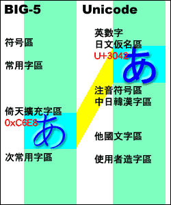

| BIG-5 日文？ JIS 日文？ 想要看到日文怎麼那麼複雜？ | |
| 聽說 BBS 上的日文是什麼櫻花輸入法，而日本網頁上的日文則是什麼 JIS 日文還是 Shift-JIS 日文之類的，複雜得半死。
如果想要正常看到每一種日文的話，別人告訴我不只要下載櫻花輸入法，還要安裝微軟的什麼日文套件，明明看起來都是日文，怎麼那麼複雜啊？
打 BBS 的時候，只能用櫻花輸入法打日文假名，還要來回切注音好麻煩(泣)。 | |
| 可是漢字好像沒問題啊？ | |
| 但很奇怪的是，不是說日文網站是 ShiftJIS 碼，跟 BIG-5 不一樣嗎？
那為什麼把日本網站的文章複製貼上到 BBS 上後，假名會變成「?」，但是有些漢字卻留下來了!? 不是說內碼不一樣嗎，那為什麼有些漢字好像沒有問題呢!? | |
| Unicode 技術 | |
| 其實，為了解決不同語系之間資訊交流的問題。有一種技術存在，叫做 Unicode。 事實上，Windows NT/2000/XP 的系統核心就是 Unicode。 簡單的說，Unicode 是一個超大的文字庫，他蒐集了世界上所有語言的大部分文字，而收錄在同一個文字庫裡。包括 繁/簡體中文、日文、韓文，以及許多想不到的語文。因為 Windows 2000 使用 Unicode 作為核心，所以理論上，Windows 2000應該可以同時處理世界各國的文字。
Unicode 裡，無論是英文還是漢字、假名，每個字都是兩個 bytes(位元組)。 雖然說 Windows 2000/XP 下，文字是 Unicode，但是從 MS-DOS 時代、甚至 Windows 3.1/95/98/ME 所留下來的大量資料，當時都是使用 ANSI 編碼儲存的。所以，Windows 2000 並不可能真的放棄掉 ANSI 編碼。於是，系統就必須隨時自動處理 Unicode 跟 ANSI 之間的轉換。 例如說，「一」這個字的 BIG-5 碼是 0xA440，而他的 Unicode 是 U+4E00，當今天網頁被下載的時候，傳進來的雖然是 0xA440，但是系統會自動把他轉成 Unicode 的 U+4E00，所以顯示在 IE 畫面上時，他已經被當作 Unicode 的 U+4E00 顯示了； 而當我今天留言的時候，從注音輸入法打出來的其實是 Unicode 的 U+4E00，可是按下送出了以後，IE 事實上會判斷網頁的語系，因為是 BIG5 的網頁，所以會把他自動轉換成 0xA440 後才傳送出去。
總之，使用 Windows 2000/XP 時，系統就樣這樣常常把文字在 Unicode 跟 ANSI 之間轉來轉去。
如圖例可知，Windows 2000 的核心是以 Unicode 處理資料，而讀取到不同的內碼時，都會跟 Unicode 之間作轉換。 | |
| 回過頭看 BIG-5 碼與倚天擴充字集 | |
| 早在 20 年前，台灣各電腦廠商聯合制定了 BIG-5 碼，又稱五大碼，專門用來處理中文字碼。 BIG-5 碼的內容有常用字 5,401 個、次常用國字 7,693 個及符號 471 個，共計約 13600 字。而當時極為普遍的倚天中文系統，為了反映使用需求，另外編入了日文平假名、日文片假名、俄文字母、圈號數字、雙線表格、以及七個常用外字 (碁、銹、裏、墻、恒、粧、嫺)，也就是所謂的倚天擴充字集，倚天擴充字集被安置在 BIG-5 碼中原先定義為使用者造字區的位置。 由於倚天中文系統當時在台灣、香港的佔有率幾乎達到 100%，所以倚天擴充字集可以說是成為 BIG-5 碼非正式的標準。
然而，微軟 Windows 3.1 上市的時候 (※註：Windows 3.1 是第一個有中文版的 Windows。)，很荒謬的，說沒有採用倚天擴充字集，卻採用了雙線表格、以及七個常用外字等部分，但日文平假名、日文片假名、俄文字母、圈號數字等，卻都沒有被採用。 | |
| 越來越難懂了，是否可以簡化一點啊？ | |
| 總之啦，雖然台灣的內碼是 BIG5，日本的內碼是 Shift-JIS，但在 Windows 2000/XP 下，藉由核心的 Unicode 作為橋樑，在一般的情況下，應該資料可以互相共享才對。 真正的問題在於 BIG5 的缺字。當某個字 ShiftJIS 有，但是 BIG5 沒有時，那個字轉換成 BIG5，就會變成問號。 例如假名或日本簡體字，就如同上面說的，微軟採用的 BIG5 並沒有包括假名。GB 碼的簡體字也是一樣的情形。 | |
| 慢一拍的 Big5+ 與 Big5e | |
| 事實上，放眼台灣史上制定交換碼 ※1 的歷程，都是各部會在搶功。主計處、標準局、教育部，大家都想插一腳，始終沒生出一個能用的碼。
但民間業者也急著推出中文系統，就是在這種時空環境下，業者們才緊急討論出 BIG5 編碼，事實上 BIG5 只是業界標準，但在政府單位一直鷸蚌相爭下，BIG5 就此就穩穩坐上台灣業界標準，迄今仍舊不搖了。 但，BIG5 因為是臨時趕出來的，引發的問題也很多。 像 BIG5 的缺字問題就積弊已久，除了日文假名外，還有人名常用字等，如堃、煊這些字都沒有收錄 ※2，一直以來，都廣為使用者所詬病。 90 年代，隨著 BIG5 已固定化，中推會終於推動 BIG5 的修改，首先推出了 Big5+，使用了兩萬多碼位，不只相容於 BIG5 與倚天擴充字集，更納入 Unicode 2.0 下所有漢字，與大陸的 GBK 有異曲同工之妙，但推出時間太晚，Windows 95 早已上市，使用了與 BIG5 不同的碼位範圍，微軟似乎無意支援。由於使用到的範圍超過原先 BIG5 定義，亦無法藉由造字安裝的方式，安裝在 Windows 上。
為了使 Windows 使用者可以使用，中推會又配合 BIG5 的碼位範圍，再推出了憋腳的 Big5e。BIG5 的碼位範圍較小，能收錄的字較少，為了把漢字收進去，只好放棄掉倚天擴充字集的部分，也就是－沒有假名。於是在民間的可接受度可想而知，除了部份政府單位、自然輸入法之外，也沒有多少人願意採用 Big5e，就普及率而言，也算是無疾而終了。
| |
| 櫻花輸入法是什麼？ | |
| Roy Hu 先生製作了 Windows 造字檔格式的日文字型，並且自己以通用輸入法編輯工具編寫了一套日文的輸入法，加上了安裝程式後，流傳在網路上。 由於安裝了櫻花輸入法後，便可以在 Windows 環境下瀏覽並輸入日文，所以從 Windows 95 起，就廣受網友的喜愛。 其他如日文假名輸入法等，都是做一樣的事情。
| |
| 中國海字集又是什麼？ | |
| 業界的腳步總是走在政府的前面，從 Windows 還沒出現的倚天中文系統時代起，中國海字集就高收錄了中國、日本簡體字、各種常見外字、方言用字，可解決平常缺字嚴重的問題，故廣受一般用戶喜愛。尤其廣受 DOS 時代的 BBS 用戶愛用。 中國海字集在 DOS 時代聲勢浩大，在 Windows 推出後，也持續推出 Windows 版本，並把微軟捨棄的倚天外字也含入，仍受許多玩家喜愛。但因 Windows 2000 後，造字匯入容易出問題，加上付費軟體漸漸拼不過免費軟體的市場機制使然，在 2002 年後逐漸消失。 但，中國海字集為台灣提供了最大而最廣為使用的一套外字。比起華康、文鼎各公司都有一套自己的外字，中國海字集是難能走遍全台灣的。 若說 BIG5 是台灣國字內碼的業界標準，那中國海字集應能在台灣外字內碼的非公認標準當之無愧吧。
| |
| 如果當時微軟採用 BIG-5 裡的日文假名就好了 >_< | |
| 如果微軟當時採用了倚天擴充字集裡的日文假名，那 BIG-5 碼轉換成 Unicode 的時候，BIG-5 裡面的日文假名因為是合法的文字，當然會被轉譯成 Unicode 的日文假名部分。 進一步來說也就可以透過 Unicode 與其他任何的內碼中文假名溝通。
事實上，大陸的 GB2312 碼，甚至韓國的內碼中，都有日文假名的部分，而且在 Windows 中也未被消去。只有繁體中文的 BIG5 碼，在 Windows 裡，這個部分被刪除了。
| |
| 您知道嗎? 其實 Windows 2000/XP 的細明體裡，有假名喔!! | |
|
使用 Windows NT/2000/XP 的網友們，你知道你的系統字型「細明體」，甚至新細明體跟標楷體，裡面其實都有日文假名喔。 因為這些 Unicode 架構的 Windows，系統字型也是以 Unicode 的格式製作的，在細明體中，有完整的製作出日文假名、日本漢字、大陸簡體字等部分。 然而，由於倚天擴充的假名並沒有被承認，我們要使用假名時，還是要以造字檔的方法掛入系統使用的，也就是安裝櫻花輸入法等軟體來使用假名。而這些字對應到 Unicode 上，也是對應在 Unicode 裡使用者造字的位置。 如右圖，あ字是對應到 Unicode 中使用者造字區的內碼 U+F6F8 處，而不是 Unicode 中あ的位置 U+3042。
| |
| 那 Unicode 補完計畫是怎麼處理的? | |
| 
講到現在，終於到了 Unicode 補完計畫本身了。你會問，講了這麼多，Unicode 補完計畫到底是在做什麼？ 簡單的說，就像右圖，這個套件是用來修改 Windows 裡 BIG5 與 Unicode 之間的對應關係，把 BIG5 的日文假名字碼，對應到 Unicode 的正確日文字碼上，而不是微軟一開始對應到的造字區。 這種做法，跟以往使用造字檔等方法不同，這樣做等於直接徹底改進當時微軟沒有承認倚天擴充字集裡日文假名的問題。因為直接把這些假名對應上了 Unicode 的日文部分，所以你不用安裝字型，就可以直接使用 Unicode 的日文字型看到假名。 而且因為他轉成 BIG5 後，還是存在 BIG5 倚天擴充字集的位置，所以你製作的所有文字檔、網頁，或是別人的文字檔、網頁，還是可以沒有問題的交流。
| |
| 裝完 Unicode 補完計畫後，有什麼變化呢? | |
| |
| 以圖表解釋的話 | |
| 這是 Unicode 補完計畫 2.00 版時的說明圖：
如上圖，一開始 BIG5 日文假名是與 Unicode 的使用者造字區互相對應，而 Unicode 的日文假名區在 BIG5 中沒有適當的對應位置。
| |
| 漢字對應 | |
| 從 1.5 版開始新增加了 Unicode 簡體漢字單方向對應到 BIG5 繁體字的設計，例如說「亀」字對應到「龜」字上，這樣有助於從日文網站把資料複製到 BBS 上等時候使用。 但單向對應容易引起檔名的轉換不正常，經過多方面考量，以及問卷調查的結果，我們正式決定從 2.10 beta 版開始，將漢字外字也採用雙向對應。
所謂雙向對應，就是跟上述對應假名的情況一樣，直接在 BIG5 中加上這個字，並將他對應到正確的 Unicode 字碼上。
如上圖，現在起，您可在 BBS 使用各種日本國字、日本簡體字、大陸簡體字，只要對方也有安裝本軟體，就能看的到。※1
| |
| Windows 95/98/ME 的使用者呢？ | |
| 由於 Windows 95/98/ME 的核心是 ANSI，與 Windows 2000/XP/2003 相較下，受限較大，但 Windows 95/98/ME 系統中仍然有 BIG5 與 Unicode 的對照表，所以上述說明，基本上大部分也適用在 Windows 95/98/ME。 如，日文網頁可以直接 Copy 到 BBS 或記事本上，這是沒有問題的。但由於 MS-IME 95/98 所輸出的是 ShiftJIS 而不是 Unicode，所以輸入假名仍需要倚賴櫻花輸入法。 而顯示方面，所幸 Windows 95/98/ME 可以讀取 Windows 2000/XP 版本的細明體字型，所以您必須另外更新細明體以供顯示用。礙於空間的限制，目前GDI顯示上，「日文假名」、「日文漢字」的部分您可以透過更新細明體直接看到。但是「中國簡體字」、「圈號數字」或其他部分符號，您仍需要安裝中國海字集。 相較於 Windows 2000/XP 只有一個表在掌管 BIG5 和 Unicode 間的字碼轉換，Windows 95/98/ME 高達3個表！ IE、檔案系統、GDI (視窗顯示) 各有自己的轉換表，所以工程比較龐大，我們在這一段也耽擱已久。 但是，Windows 95/98/ME 版本的 Unicode 補完計畫還是向您見面了！
除了 Windows 95/98/ME 核心是 ANSI，使轉換前、轉換後的日文檔名無法並存以外，多數的問題已可靠 Unicode 補完計畫解決。 | |